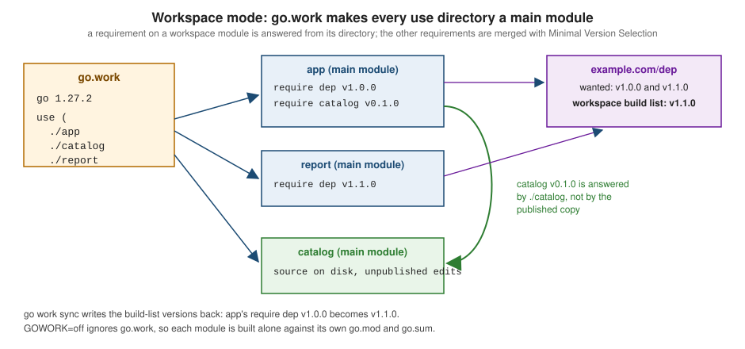

Workspaces, Versioning and Publishing
|
This content was generated with the assistance of AI and should be verified against the official documentation before being relied on in production. |
This page is written against Go 1.27 (go1.27.2), checked on 2026-10-18. Every go.mod and go.work shown uses go 1.27.
All commands were run with that toolchain against local modules and a local module proxy (a directory served with
GOPROXY=file://...), with no network. Publishing needs a real repository, so those steps are labelled not run and are
checked against the official documentation. The previous page,
Modules and Dependency Management, covers go.mod,
go.sum, Minimal Version Selection and the proxy settings. This page covers working on several modules at once and what
happens when a module is versioned and released. The next page,
The go Command, Builds and Cross-Compilation,
covers building the result.
The scenario
The shelf catalogue is split into three modules next to each other. catalog holds the in-development source, which is
newer than its published v0.1.0; app and report are consumers. The published copies live in the local proxy:
ws/
app/go.mod module example.com/shelf/app requires dep v1.0.0 and catalog v0.1.0
catalog/go.mod module example.com/shelf/catalog (source with Describe and Book.ISBN, not in v0.1.0)
report/go.mod module example.com/shelf/report requires dep v1.1.0// Package catalog holds the books of the shelf.
package catalog
import "fmt"
// Book is one catalogued title.
type Book struct {
Title string
ISBN string
}
// Describe returns a one-line description of b.
func Describe(b Book) string {
return fmt.Sprintf("%s (%s)", b.Title, b.ISBN)
}Source: Tutorial: Create a Go module
package main
import (
"fmt"
"example.com/dep"
"example.com/shelf/catalog"
)
func main() {
fmt.Println(catalog.Describe(catalog.Book{Title: "Dune", ISBN: "9780441172719"}))
fmt.Println("dep", dep.Version)
}Why workspaces exist
Before Go 1.18, using an unpublished change of one module from another meant adding a replace directive to the
consumer’s go.mod and removing it before committing. Built alone, app only sees the published catalog v0.1.0, which
has neither Describe nor the ISBN field:
# example.com/shelf/app
./main.go:11:22: undefined: catalog.Describe
./main.go:11:59: unknown field ISBN in struct literal of type catalog.BookA workspace fixes this without touching any go.mod. A go.work file lists module directories and the go command
treats each as a main module: a root of the dependency graph, built from its directory instead of a downloaded copy.
Source: Get familiar with workspaces
go work init and the go.work file
go work init ./catalog ./app
cat go.work
cd app && go run .go 1.27.2
use (
./app
./catalog
)
go: downloading example.com/dep v1.0.0
Dune (9780441172719)
dep v1.0.0app now compiles against the directory ./catalog although its go.mod still requires catalog v0.1.0. Note that
go work init writes the full running version (go 1.27.2) in the go line, and that app needed no go.sum entry for
catalog: checksums come from the modules' go.sum files plus a workspace-level go.work.sum.
The file is line-oriented, with a grammar close to go.mod's:
| Directive | Meaning |
|---|---|
|
Language version. Since Go 1.21 it is a strict minimum: older toolchains refuse the workspace. |
|
Suggested toolchain, as in |
|
Default GODEBUG setting for the workspace (Go 1.23). |
|
Adds the module in |
|
Same syntax as in |

go work use, edit, sync and vendor
| Command | Purpose |
|---|---|
|
Create |
|
Add directories ( |
|
Scripted edits with no module lookups: |
|
Write the workspace build list back into each module’s |
|
Write a workspace |
Adding the third module with use shows Minimal Version Selection over all main modules: app asks for dep v1.0.0,
report for v1.1.0, so both build with v1.1.0:
go work use ./report
cd app && go run .
go list -m allgo: downloading example.com/dep v1.1.0
Dune (9780441172719)
dep v1.1.0
example.com/shelf/app
example.com/shelf/catalog
example.com/shelf/report
example.com/dep v1.1.0go work edit is the non-interactive counterpart for scripts, for example go work edit -use=./tools -replace=example.com/other@v1.0.0=./tools; add -print to preview the result without writing it.
go work sync closes a remaining gap: app's own go.mod still says dep v1.0.0, and syncing
raises it to the workspace selection. Minimal Version Selection guarantees the workspace version is the same or higher,
so sync never downgrades. Commit go.work.sum together with go.work if you commit go.work.
go work sync
cat app/go.modmodule example.com/shelf/app
go 1.27
require (
example.com/dep v1.1.0
example.com/shelf/catalog v0.1.0
)Since Go 1.22 go work vendor writes a workspace-level vendor directory that builds use by default. It contains only
third-party code: example.com/dep is copied, the workspace modules are not.
go work vendor
cat vendor/modules.txt
cd app && go run .## workspace
# example.com/dep v1.1.0
## explicit; go 1.27
example.com/dep
# example.com/shelf/catalog v0.1.0
## explicit; go 1.27
Dune (9780441172719)
dep v1.1.0Working inside a workspace
A command is in workspace mode when GOWORK names a .work file, or, if it is empty, when go.work exists in the current
directory or a parent. go env GOWORK shows the choice (empty outside workspace mode) and GOWORK=off forces single-module
mode:
go env GOWORK
cd app && GOWORK=off go build ./..../ws/go.work
main.go:6:2: missing go.sum entry for module providing package example.com/dep (imported by example.com/shelf/app); to add:
go get example.com/shelf/app
main.go:7:2: missing go.sum entry for module providing package example.com/shelf/catalog (imported by example.com/shelf/app); to add:
go get example.com/shelf/app(The first line is shortened for this page.) After GOWORK=off go mod tidy the build fails with the undefined: catalog.Describe
errors shown earlier. That is the point of GOWORK=off: it shows your module as its users see it, so CI should use it.
Rules to remember:
-
go mod init,go mod why,go mod edit,go mod tidy,go mod vendorandgo getalways operate on a single main module, never on the whole workspace. Rungo mod tidyper module, withGOWORK=off, before publishing. -
./...matches only the workspace packages below the current directory and fails at a workspace root that is not a module. Go 1.25 added theworkpattern for the packages of all main modules:go vet workandgo test workwork from anywhere, andgo list -mprints the main modules. -
A module that
go.workdoes notuseis not built; thegocommand suggestsgo work use .:current directory is contained in a module that is not one of the workspace modules listed in go.work. You can add the module to the workspace using: go work use . -
Only
-mod=readonlyand-mod=vendorexist in a workspace:go: -mod may only be set to readonly or vendor when in workspace mode, but it is set to "mod" Remove the -mod flag to use the default readonly value, or set GOWORK=off to disable workspace mode. -
A
go.workor used module that needs a newer Go than the toolchain fails clearly (see Toolchain Versions and Compatibility):go: ../go.work requires go >= 1.28 (running go 1.27.2; GOTOOLCHAIN=local) go: module ../report listed in go.work file requires go >= 1.28, but go.work lists go 1.27.2; to download and use go 1.28: go work use
Should go.work be committed? The reference calls it generally inadvisable: a checked-in file can override a developer’s
own go.work from a parent directory, and can make CI test the wrong dependency versions. CI should not use it, so the
module is tested as other modules will require it. Committing is reasonable when the modules of a repository are only ever
developed together.
In short, a replace in go.mod belongs to one module and is ignored when that module is a dependency of another (only the main module’s replaces count), so it suits permanent substitutions such as a fork. A go.work belongs to the developer’s checkout and suits short-lived multi-module work; go mod edit -replace=example.com/dep=../ws/catalog adds the local-directory form and -dropreplace removes it.
Version numbers
A module version is a semantic version with a leading v. The go command compares versions with semver precedence, and
each part is a signal to users:
| Form | Meaning |
|---|---|
|
Initial development, no compatibility promise: any release may break. |
|
The first stable line. From |
|
A pre-release. Sorts before |
|
A pseudo-version: the name the go command gives an untagged commit (timestamp in UTC and a 12-character commit prefix),
produced by |
|
A major version 2 or higher of a repository with no |
|
A new major version: the module path changes (below). |
Version queries go through the proxy, so versions are visible before you depend on a module. The scratch proxy holds
example.com/dep v1.0.0, v1.1.0, v1.1.1 (whose go.mod retracts v1.1.0) and the pre-release v1.2.0-rc.1:
go list -m -versions example.com/dep
go list -m example.com/dep@latest
go get example.com/dep@v1.2.0-rc.1
go get example.com/dep@latestexample.com/dep v1.0.0 v1.1.1 v1.2.0-rc.1
example.com/dep v1.1.1
go: upgraded example.com/dep v1.1.0 => v1.2.0-rc.1
go: downgraded example.com/dep v1.2.0-rc.1 => v1.1.1@latest is the highest release that is not retracted: the pre-release and v1.1.0 are skipped, and a consumer who
wants the pre-release must ask for it. Note that go get ...@latest can downgrade a module that was on a pre-release.
Source: Module version numbering
Releasing: the workflow
(breaking changes allowed)"] B --> C["Publish v1.0.0 when the API is ready to be stable"] C --> D{"Next change?"} D -->|"bug fix"| E["patch: v1.0.1"] D -->|"new, compatible API"| F["minor: v1.1.0"] D -->|"cannot stay compatible"| G["new major: module path ends in /v2"] E --> D F --> D G --> H["v1 can keep being maintained side by side"]
The rules the workflow encodes: a published version is immutable (the first download is recorded by the checksum
database and any later difference is a security error); pre-releases are for feedback and never picked by default; and
breaking changes in v1 and above wait for a new major version, a last resort because it splits importers across two
import paths.
Breaking changes and major versions
Go’s import compatibility rule says that a package with the same import path as an older one must be backward
compatible with it. A breaking change therefore needs a new import path: from v2 on, the module path (and with it the
import path of every package) ends with /v2, in the module line and in every import. v0 and v1 never take a suffix.
In the shelf, v2 replaces the Describe function with a String method and a typed ISBN. It lives in a v2
subdirectory of the same repository (the "major subdirectory" layout; a "major branch" layout, editing the module
line on a v2 branch, is equally valid):
catalog/go.mod module example.com/shelf/catalog go 1.27
catalog/v2/go.mod module example.com/shelf/catalog/v2 go 1.27// Package catalog is the v2 API of the shelf catalogue.
package catalog
// ISBN is a validated identifier; v2 no longer accepts bare strings.
type ISBN string
// Book is a catalogued title.
type Book struct {
Title string
ISBN ISBN
}
// String implements fmt.Stringer: v2 replaces the Describe function.
func (b Book) String() string {
return b.Title + " [" + string(b.ISBN) + "]"
}catalog and catalog/v2 are different modules, so one program can import both, which is how large codebases migrate one
call site at a time:
package main
import (
"fmt"
catalogv1 "example.com/shelf/catalog"
catalogv2 "example.com/shelf/catalog/v2"
)
func main() {
fmt.Println(catalogv1.Describe(catalogv1.Book{Title: "Dune", ISBN: "9780441172719"}))
fmt.Println(catalogv2.Book{Title: "Dune", ISBN: "9780441172719"})
}Dune [9780441172719]
Dune [9780441172719](go.work here lists ./app, ./catalog and ./catalog/v2 as three separate main modules.) The nested go.mod cuts
v2 out of the v1 module’s files, so go list ./... inside catalog lists only example.com/shelf/catalog.
The classic mistake is changing the tag without the path, or the directory without the module line. A /v2 module
path whose go.mod still declares the old path is rejected:
go: example.com/badmajor/v2@v2.0.0 requires example.com/badmajor/v2@v2.0.0: parsing go.mod:
module declares its path as: example.com/badmajor
but was required as: example.com/badmajor/v2go mod edit -module rewrites the module line; importers migrate by changing import paths. The standard library uses the
same idea in math/rand/v2 (Go 1.22) and encoding/json/v2 (Go 1.27).
Module compatibility guidelines
The blog post Keeping your modules compatible sets out what a v1 author may do:
-
Compatible in a minor release: adding functions, types, constants, variables, methods on your own types and whole new packages.
-
Breaking: removing or renaming anything exported; changing a signature (including turning a function into a variadic one, which changes its type); changing documented behavior; adding a method to an interface that users implement.
-
Struct fields. Adding a field breaks code that builds the struct with an unkeyed literal such as
catalog.Book{"Dune", "978..."}(thego vetcompositescheck flags unkeyed literals of imported structs), and it can make a comparable struct non-comparable. Document that keyed literals are expected. -
Add, do not change. Retire an API with a
Deprecated:paragraph in its doc comment and keep it working for the rest of the major line. -
Aliases bridge versions. A
v1package may forward to the new implementation withtype Book = v2.Book, so that both import paths share one implementation. -
Dependencies count. Raising your
goline or requiring a much newer dependency changes what Minimal Version Selection gives your users, so treat it as a compatibility change. -
Keep the exported surface small. Anything under
internal/or unexported can change freely.
Tools can check the API for you: golang.org/x/exp/cmd/gorelease compares the module with a previous version and reports
the version number the changes require, and golang.org/x/exp/apidiff is the library under it. Both are separate modules
and were not run here (no network).
Source: Keeping your modules compatible
Retracting versions and deprecating modules
A published version cannot be deleted or changed. If one is broken, publish a new version whose go.mod retracts it.
retract takes one version or a range (retract [v1.0.0, v1.0.5]); the comment becomes the rationale users see:
module example.com/dep
go 1.27
retract v1.1.0 // published by mistake: wrong ISBN parsingA retracted version stays downloadable, so existing builds keep working, but it leaves the normal listing, @latest skips
it and tools report it:
go list -m -versions example.com/dep
go list -m -versions -retracted example.com/dep
go list -m -u example.com/dep
go get example.com/dep@v1.1.0example.com/dep v1.0.0 v1.1.1 v1.2.0-rc.1
example.com/dep v1.0.0 v1.1.0 v1.1.1 v1.2.0-rc.1
example.com/dep v1.1.0 (retracted) [v1.1.1]
go: warning: example.com/dep@v1.1.0: retracted by module author: published by mistake: wrong ISBN parsing
go: to switch to the latest unretracted version, run:
go get example.com/dep@latestThe retraction is read from the module’s latest version, which is why the fix is a new release; retracting the latest
version itself needs a still newer one. go list -m -json -u exposes the rationale in the Retracted field, and
go mod edit -retract=v1.0.0 adds the directive from a script.
A whole module is deprecated with a paragraph starting Deprecated: in a comment above the module line:
// Deprecated: use example.com/dep instead.
module example.com/oldlib
go 1.27go: module example.com/oldlib is deprecated: use example.com/dep instead.
example.com/oldlib v1.0.0 (deprecated)The first line is printed by go get, the second by go list -m -u. Deprecation is advisory, hides nothing, and is read
from the latest version. Deprecating a package or symbol uses the same Deprecated: convention in its doc comment; see
Documentation and Doc Comments.
Publishing a module
Go has no upload step and no registry account. A module is published by making a version-control tag visible; the proxy fetches it on demand. The steps from Publishing a module, not run here because they need a remote repository:
cd path/to/module-root
go mod tidy
go test ./...
git commit -m "catalog: ready for v1.0.0"
git tag v1.0.0
git push origin v1.0.0
GOPROXY=proxy.golang.org go list -m example.com/shelf/catalog@v1.0.0-
The module path in
go.modmust be the path users import, mapped to the repository by the code host’s URL (github.com/org/repo) or by ago-importmeta tag on a custom domain. -
The tag is the version. A module at the repository root uses the plain version (
v1.0.0); modules in subdirectories use a prefix (next section). -
The last command asks the proxy for the version, which makes it fetch and cache the code and the checksum database record the hashes. From then on
go get example.com/shelf/catalog@v1.0.0works for everyone. pkg.go.dev takes its data from the proxy and the module index; a module can also be added by requesting its page there. -
Never change a tag after publishing. The first copy is what the proxy and
sum.golang.orgremember, and a different copy produces a security error. Publish a new version and retract the bad one. -
The proxy cache is deliberately permanent, so a version cannot be removed from it. For content that must be taken down, pkg.go.dev documents what to do in About pkg.go.dev. Retracting hides a version from the go command and pkg.go.dev alike.
What the proxy serves is small and file-shaped, and the scratch proxy has exactly that layout: per module a list of versions (here v1.0.0, v1.1.0, v1.1.1, v1.2.0-rc.1), and per version an .info file ({"Version":"v1.1.1","Time":"2026-10-01T00:00:00Z"}), a .mod file (the go.mod) and a .zip.
The .zip holds the module’s files under example.com/dep@v1.1.1/. go mod verify confirms the downloaded copies
match their recorded hashes (all modules verified). The real proxy also serves @latest and the checksum database
endpoints; the protocol is in the reference.
Multi-module repositories and subdirectory modules
One repository can hold several modules. Each has its own go.mod, and a module’s files exclude any nested directory
that has its own go.mod. The tag of a module not at the repository root is prefixed with its module subdirectory, the
part of the module path after the repository root, without any major version suffix:
git tag catalog/v0.1.0
git tag catalog/v0.2.0-beta.1
git tag app/v0.1.0
git tag catalog/v1.0.0
git tag catalog/v2.0.0
git tag -l | sort -Vapp/v0.1.0
catalog/v0.1.0
catalog/v0.2.0-beta.1
catalog/v1.0.0
catalog/v2.0.0For a repository example.com/shelf, catalog/v1.0.0 is version v1.0.0 of module example.com/shelf/catalog, and
catalog/v2.0.0 is version v2.0.0 of example.com/shelf/catalog/v2, whether that module sits in catalog/ (major branch)
or in catalog/v2/ (major subdirectory). The tag’s major number must match the module path’s suffix. A plain v1.0.0 tag
in a repository with no module at the root versions nothing.
When modules of one repository depend on each other, release the dependency first, then run go get on the dependent
module (single-module mode) to require the released version, and release it. A workspace replaces temporary replace
directives during that work.
For single-module projects, Organizing a Go module recommends the package at the root,
commands under cmd/, private code under internal/, and a nested module only when it must be versioned independently or
carries heavy dependencies most users should not pay for.
Subdirectory module roots (Go 1.25). The go command resolves a module path through a
<meta name="go-import" content="root-path vcs repo-url subdir"> tag. Since Go 1.25 the optional fourth field subdir
says the module path corresponds to that subdirectory of the repository instead of its root, so the repository layout no
longer has to mirror the import path. Earlier toolchains ignore the field. This was not run here because it needs a web
server answering the ?go-get=1 request.
The ignore directive of go.mod (Go 1.25) excludes directories from ./... and all patterns while keeping them in the
module zip, useful for generated or non-Go trees inside a module.
+incompatible and non-module repositories
A repository that predates modules has no go.mod. If its tags already reach v2.0.0 or higher it cannot add /v2
retroactively, so the go command represents those versions with a suffix, v2.0.0+incompatible. The suffix is allowed
only when no go.mod exists and the module is in the repository root; once the author adds a go.mod, the major version
suffix rule applies. The import path has no /v2, and the tag itself must not carry the suffix.
go list -m -versions example.com/legacy
go get example.com/legacy@v2.0.0+incompatible
grep legacy go.modexample.com/legacy v2.0.0+incompatible
go: added example.com/legacy v2.0.0+incompatible
require example.com/legacy v2.0.0+incompatible // indirectIf you own such a repository, add a go.mod for new tags: at v0 or v1 while the path stays the same, or at v2 with
/v2 in the module path, and tag the new major.
Version notes
| Release | Relevant change |
|---|---|
Go 1.16 |
|
Go 1.18 |
Workspace mode: |
Go 1.21 |
The |
Go 1.22 |
|
Go 1.23 |
|
Go 1.24 |
|
Go 1.25 |
|
Go 1.26 |
|
Go 1.27 |
|
Where the books are outdated
-
Bodner, Learning Go (1st ed.), ch. 10 (modules, packages and imports), predates workspaces (Go 1.18), the
workpattern,go work vendorand the Go 1.21 toolchain lines. Its versioning guidance (semantic import versioning, the/v2suffix,go.sum, proxies) still holds, butretractand module deprecation are newer than its text, and the recommended way to develop against unpublished code is now a workspace rather than areplace. -
Vivien, Learning Go Programming, ch. 1 and 6, describes the GOPATH workflow: code under
$GOPATH/src,go getto fetch and install, no versions. Modules replaced it; a workspace is the module-era way of keeping several source trees side by side, andgo getno longer installs commands (usego install pkg@version).
GitHub Actions reference
For tag-triggered release workflows on GitHub, see Release Pipelines.